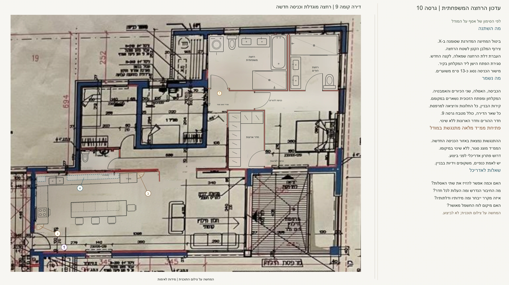
התוכנית המלאה עם כניסת הרחצה החדשה
הצעת r10 לפי הסימון הירוק: המחיצה המדורגת הוסרה, הרחצה גדלה, הכניסה עברה לשמאל והפתח ליד המקלחון נסגר. מידות ופתיחת הממ״ד דורשות תיאום.
פתיחה והגדלה ↗שמירת SVGמהתוכנית המקורית ועד החלוקה ששמרנו. השרטוטים, ההחלטות והחלופות, עם מעבר ישיר לסיור בתלת ממד.
אפשר לפתוח את התיק מכל מקום. שינויים עתידיים יתפרסמו בכתובת הזו לאחר עדכון ובדיקה.
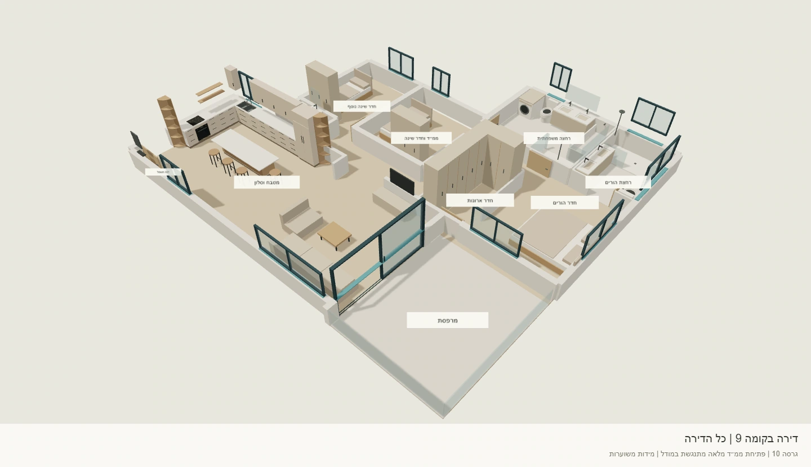
לפתיחת הסיור האינטראקטיבי ↗הצעת r10 מ-28.10.2026 מסירה את המחיצה המדורגת ברחצה המשפחתית, מגדילה את הרחצה ומעבירה את הדלת לשמאל התחתון. הפתח הקודם ליד המקלחון נסגר. מטבח r9, המתקנים והפתחים נשמרים.

הצעת r10 לפי הסימון הירוק: המחיצה המדורגת הוסרה, הרחצה גדלה, הכניסה עברה לשמאל והפתח ליד המקלחון נסגר. מידות ופתיחת הממ״ד דורשות תיאום.
פתיחה והגדלה ↗שמירת SVG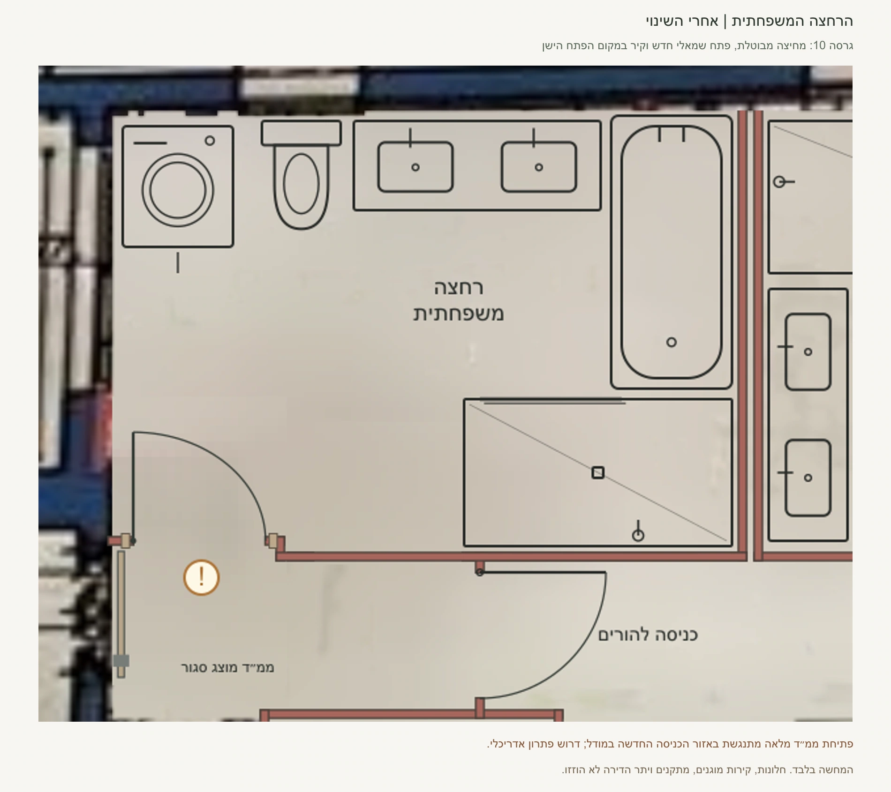
דלת פנימה בציר שמאלי במקום הנישה, עם נסיגה מקומית של כ-13 ס״מ משוערים. כל המתקנים והחלון נשמרים.
פתיחה והגדלה ↗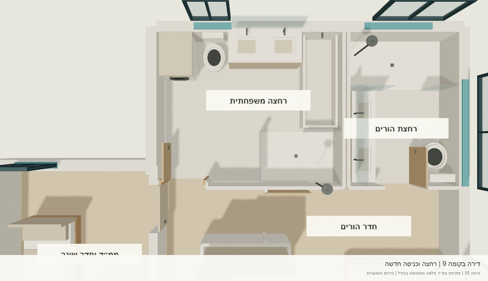
מצב רגיל לבדיקה: דלת הממ״ד סגורה ודלת הרחצה פתוחה. סיבוב הממ״ד המלא אינו מאושר כאן.
פתיחה והגדלה ↗הדירה עם הרחצה המוגדלת ומטבח r9 השמור. דלת הממ״ד מתחילה סגורה; פתיחתה המלאה נשארת בבדיקה.
פתיחה והגדלה ↗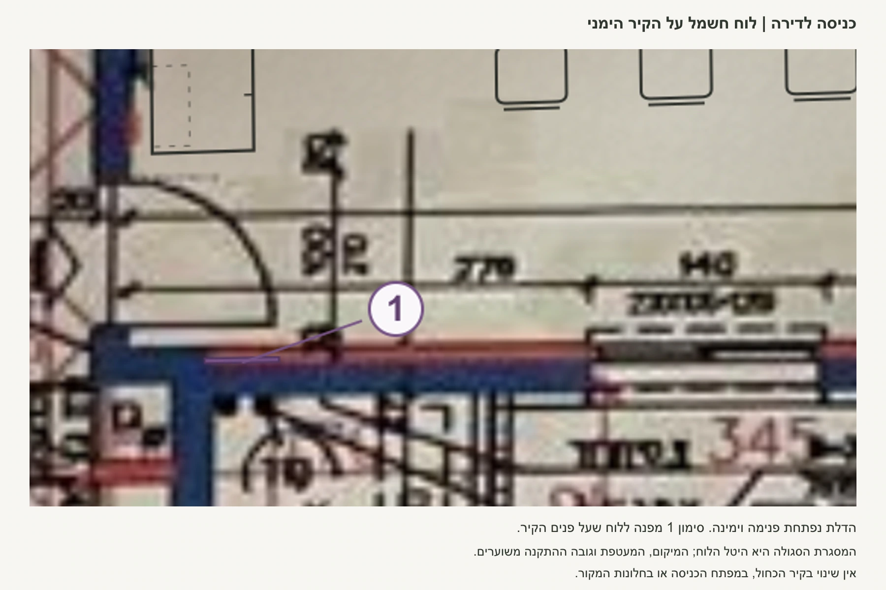
הפרט שנוסף ב-r8 ונשמר: הלוח על הקיר שמימין לנכנס, שאליו נפתחת דלת הכניסה. המעטפת וגובה ההתקנה להמחשה בלבד.
פתיחה והגדלה ↗שמירת SVG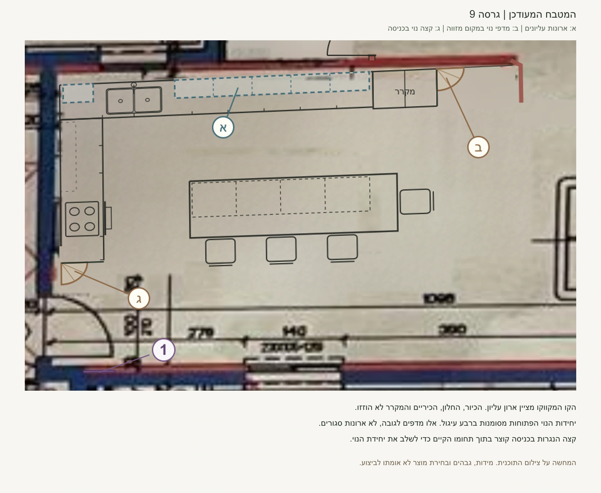
ארונות עליונים מקווקווים סביב החלון, מקרר ללא מזווה ומדפי נוי מעוגלים לידו ובקצה הכניסה.
פתיחה והגדלה ↗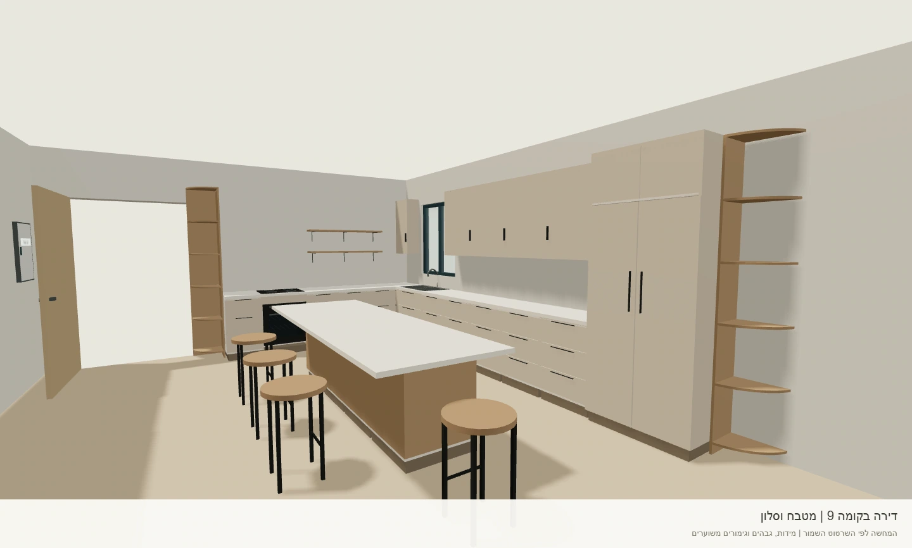
ארונות עליונים בקיר הכיור ושני קצוות מדפים פתוחים. זו המחשה בגבהים ובמידות משוערים, לא פרט נגרות לביצוע.
פתיחה והגדלה ↗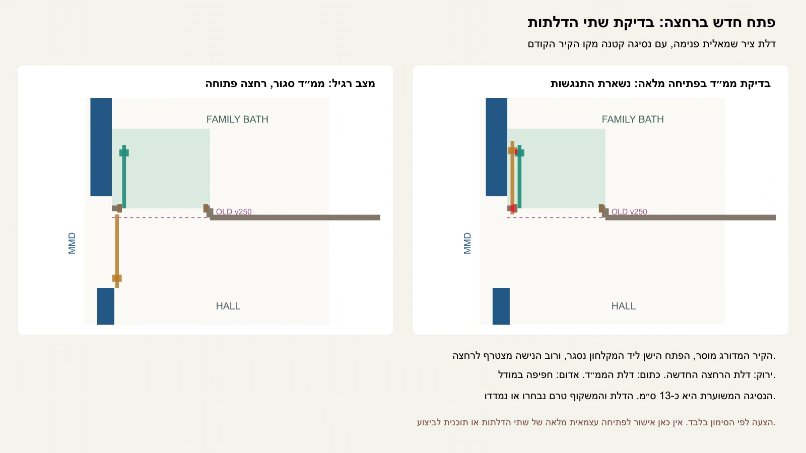
דלת הרחצה נבדקה במודל כשהממ״ד סגור. פתיחת הממ״ד המלאה עדיין מתנגשת באזור החדש. ההשוואה אינה אישור לביצוע.
פתיחה והגדלה ↗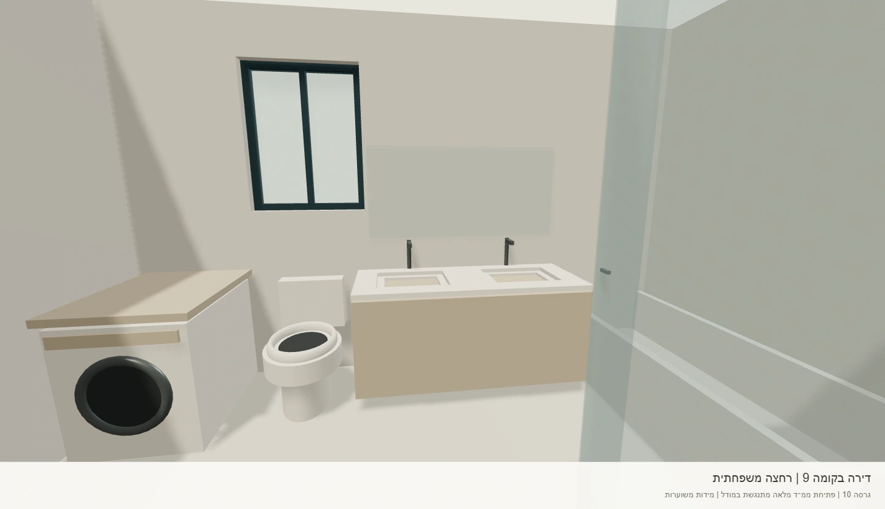
הכניסה החדשה בשמאל התחתון והפתח הקודם הסגור ליד המקלחון. המתקנים והחלון נשמרים.
פתיחה והגדלה ↗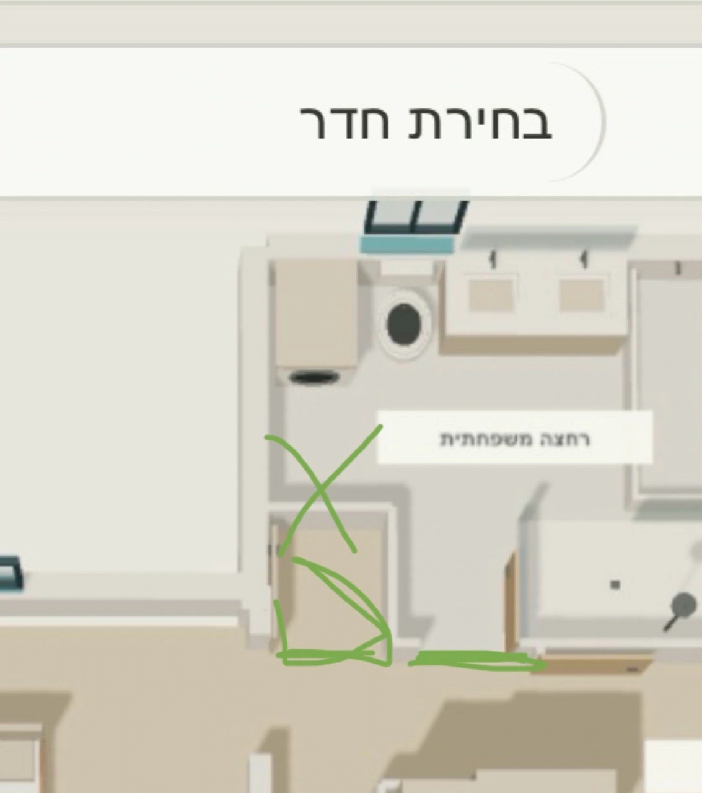
הצילום שסימן אסף: להסיר את מחיצת ה-X, להעביר את דלת הרחצה ולסגור את הפתח הקודם. הכוונה מומחשת עם תיאום דלת הממ״ד כנושא פתוח.
פתיחה והגדלה ↗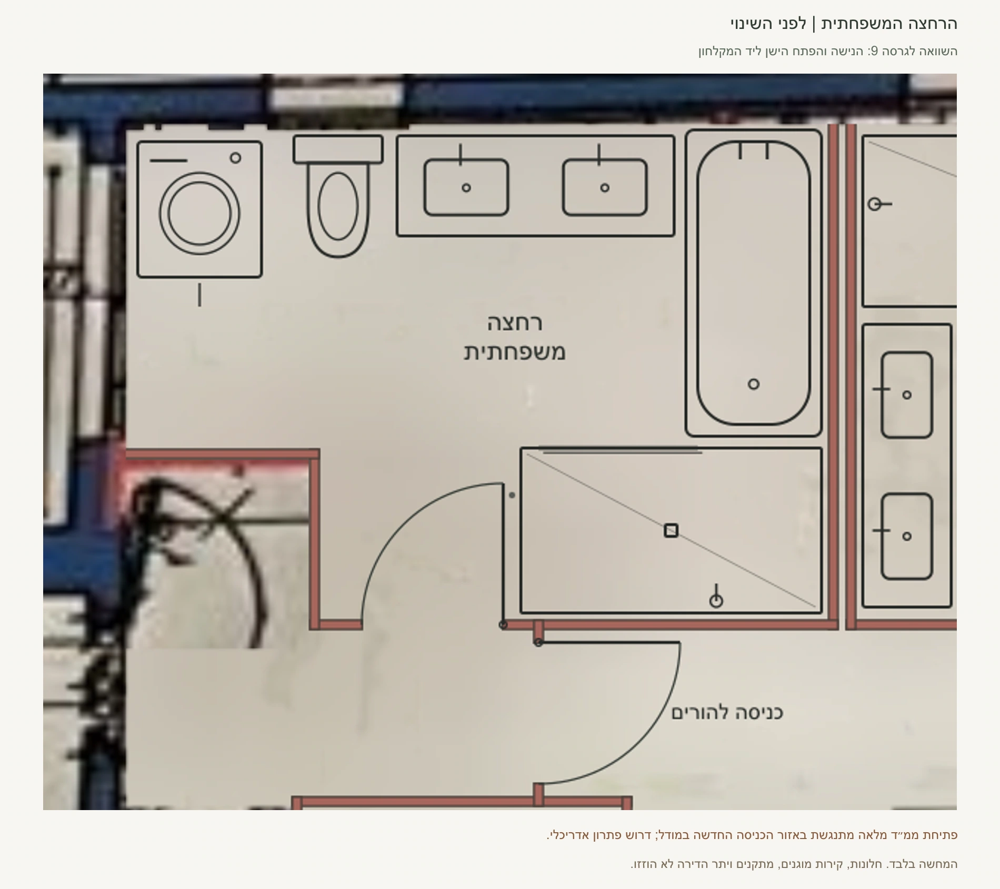
גרסת r9 לפני הסימון הירוק. תמונה זו מוצגת להשוואה בלבד ואינה התוכנית הנוכחית.
פתיחה והגדלה ↗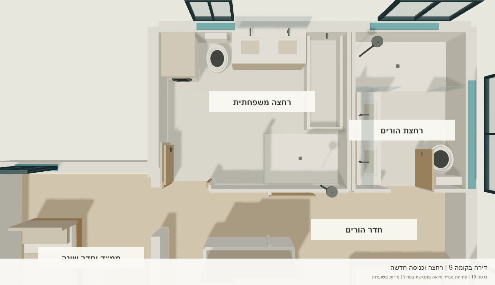
מצב בדיקה שמציג במפורש את המפגש הלא פתור בין דלת הממ״ד לבין אזור הכניסה החדש. אין לראות בו מצב תקין לביצוע.
פתיחה והגדלה ↗סיכום לקריאה מהירה. המסמכים המלאים בהמשך שומרים גם את הנימוקים והשלבים הקודמים.
לוח חשמל על הפנים הפנימיים של הקיר שמימין לכניסה, שאליו נפתחת הדלת פנימה וימינה. בתלת ממד מוצגים עשרת חלונות המקור ודלת ההזזה למרפסת גם במבט העל ובמבט הכללי. לא הוזזו פתחים או קירות.
דירה להשכרה שעדיין לא נבנתה. בשלב הזה עוסקים בחלוקת החללים ובתפקוד, ולא בבחירת גימורים. שני חדרי שינה נוספים ויחידת הורים נשארים לאחר ביטול החדר הימני העליון.
המקרר נשאר בקצה המטבח, ללא מזווה אחריו; שולחן האוכל הנפרד מבוטל. הכיור נשמר מתחת לחלון, ומשני צדי החלון ארונות עליונים במקום המדפים הארוכים. יחידות נוי פתוחות ומעוגלות אחרי המקרר ובתחילת המטבח. האינדוקציה, התנור והאי עם ישיבת שלושה ועוד אחד נשמרים.
אסלה מתחת לחלון הקיים, כיורים ואמבטיה מימינה בתוכנית, מקלחון נפרד והכביסה בפינה משמאל לאסלה. ב-r10 הכניסה עוברת לשמאל התחתון במקום הנישה, עם פתיחה פנימה בציר שמאלי. הפתח הקודם ליד המקלחון נסגר; המתקנים נשארים במקומם.
רחצת הורים עם חלונות בחדר הימני העליון, שני כיורים ומקלחון גדול. חדר הארונות גדל למלבן; נכנסים אליו מתוך חדר השינה בפינה הימנית התחתונה. כניסת ההורים סמוכה למקלחון הילדים.
קיר הטלוויזיה מתקצר עד פינת השידה כדי להרחיב את המפתח. שירותי האורחים הורחבו ימינה, הדלת זזה והאסלה הסתובבה בתוכנית. פרטי הביצוע טעונים אימות.
החלונות והקירות הכחולים נשמרים. שני חדרי השינה האחרים והממ״ד נשמרים. הקירות האדומים הם המחיצות שאסף סימן כניתנות לשינוי; זהו מידע לתכנון שיש לאמת מול הפרויקט.
לפי הסימון הירוק הנישה מצטרפת לרחצה וממוקמת בה כניסה חדשה, עם נסיגה מקומית משוערת של כ-13 ס״מ. דלת הממ״ד נשמרת; פתיחתה המלאה עדיין מתנגשת באזור החדש ודורשת פתרון מאושר. יש לברר גם דגם מקרר, מיקום סופי של לוח החשמל והיתכנות ועלות חיבור האסלות במיקומים המוצעים.
פותחים כל שלב כדי לראות את השרטוטים שלו. גרסאות קודמות נשמרות כהיסטוריה; הסימון הירוק מציין את נקודת ההמשך הנוכחית.
24 שלבים בתהליך
גרסה היסטורית. היא מוצגת לתיעוד התהליך, ואינה מחליפה את הצעת r10 הנוכחית ואת החלטות המטבח והחדרים שנשמרו.
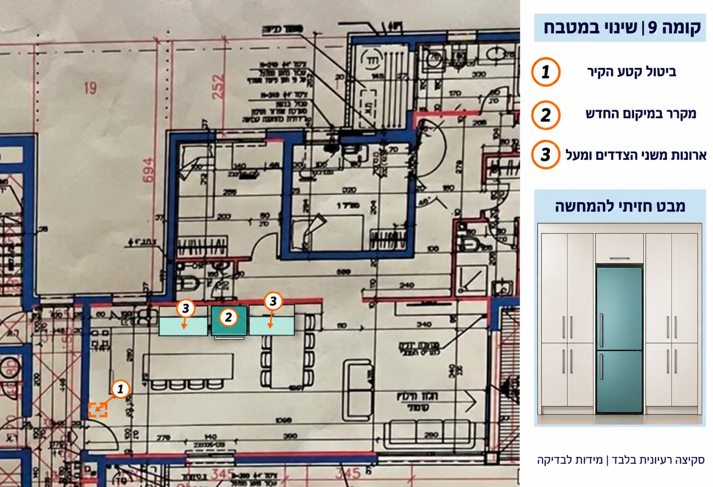
המחשה ראשונה של השינויים בכניסה, המקרר והאי. בהמשך נדרשו תיקוני מיקום ופתיחת מקרר.
פתיחה והגדלה ↗גרסה היסטורית. היא מוצגת לתיעוד התהליך, ואינה מחליפה את הצעת r10 הנוכחית ואת החלטות המטבח והחדרים שנשמרו.
גרסה היסטורית. היא מוצגת לתיעוד התהליך, ואינה מחליפה את הצעת r10 הנוכחית ואת החלטות המטבח והחדרים שנשמרו.
גרסה היסטורית. היא מוצגת לתיעוד התהליך, ואינה מחליפה את הצעת r10 הנוכחית ואת החלטות המטבח והחדרים שנשמרו.
גרסה היסטורית. היא מוצגת לתיעוד התהליך, ואינה מחליפה את הצעת r10 הנוכחית ואת החלטות המטבח והחדרים שנשמרו.
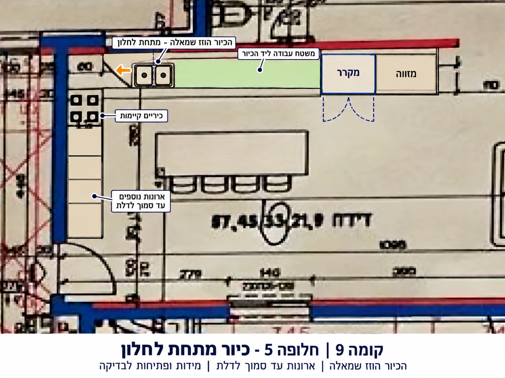
ניסיון להזיז את הכיור מתחת לחלון והמשך הארונות לאורך הקיר השמאלי; בהמשך נדרש תיקון נוסף של המרכוז.
פתיחה והגדלה ↗גרסה היסטורית. היא מוצגת לתיעוד התהליך, ואינה מחליפה את הצעת r10 הנוכחית ואת החלטות המטבח והחדרים שנשמרו.
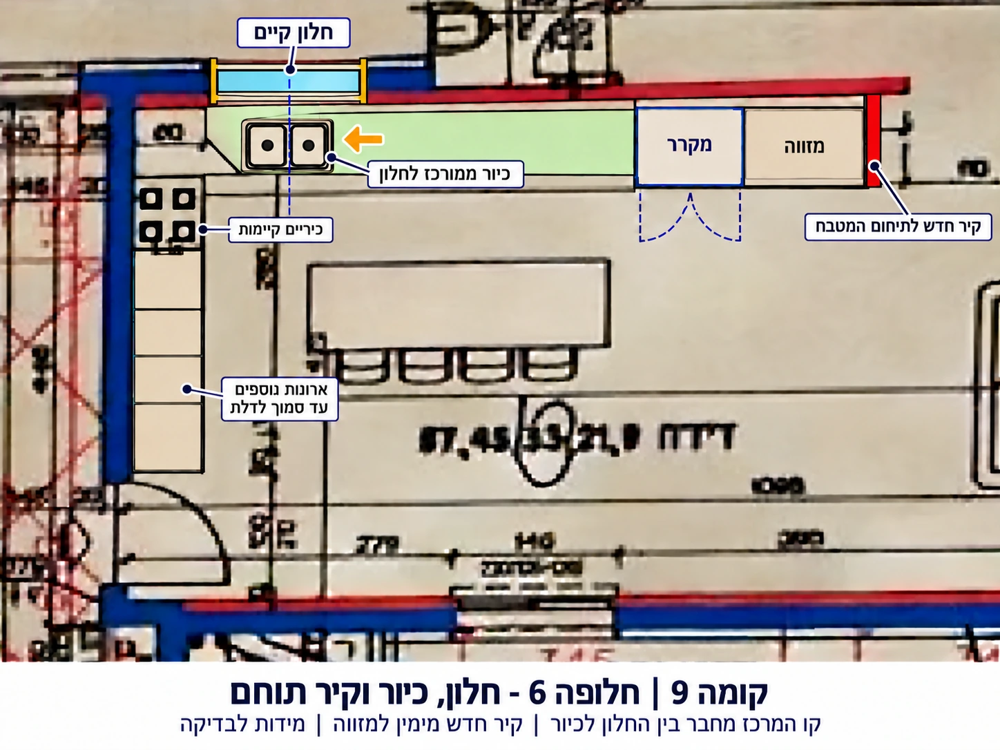
תיקון מרכוז הכיור וסימון החלון המקורי, יחד עם תיחום המזווה במחיצה אדומה קצרה.
פתיחה והגדלה ↗גרסה היסטורית. היא מוצגת לתיעוד התהליך, ואינה מחליפה את הצעת r10 הנוכחית ואת החלטות המטבח והחדרים שנשמרו.
גרסה היסטורית. היא מוצגת לתיעוד התהליך, ואינה מחליפה את הצעת r10 הנוכחית ואת החלטות המטבח והחדרים שנשמרו.
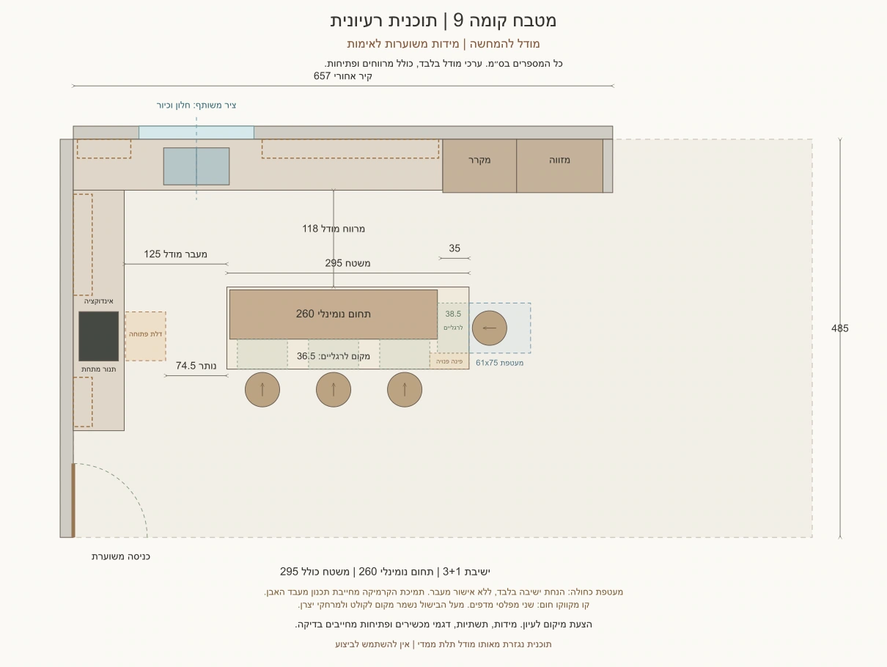
כיריים אינדוקציה ותנור בזרוע השמאלית, מדפים פתוחים ואי עם שלושה מושבים ועוד מושב בקצה.
פתיחה והגדלה ↗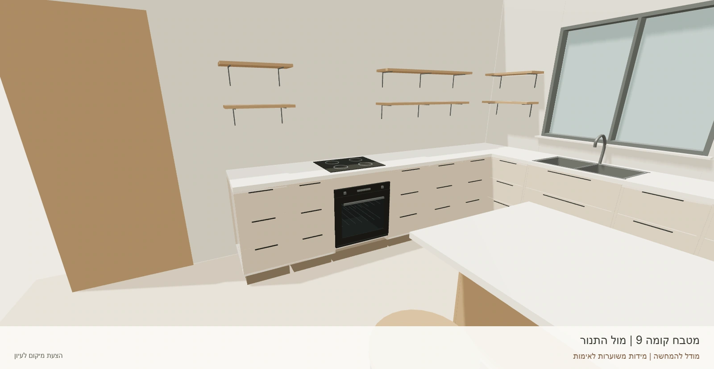
גרסה היסטורית. היא מוצגת לתיעוד התהליך, ואינה מחליפה את הצעת r10 הנוכחית ואת החלטות המטבח והחדרים שנשמרו.
גרסה היסטורית. היא מוצגת לתיעוד התהליך, ואינה מחליפה את הצעת r10 הנוכחית ואת החלטות המטבח והחדרים שנשמרו.
גרסה היסטורית. היא מוצגת לתיעוד התהליך, ואינה מחליפה את הצעת r10 הנוכחית ואת החלטות המטבח והחדרים שנשמרו.
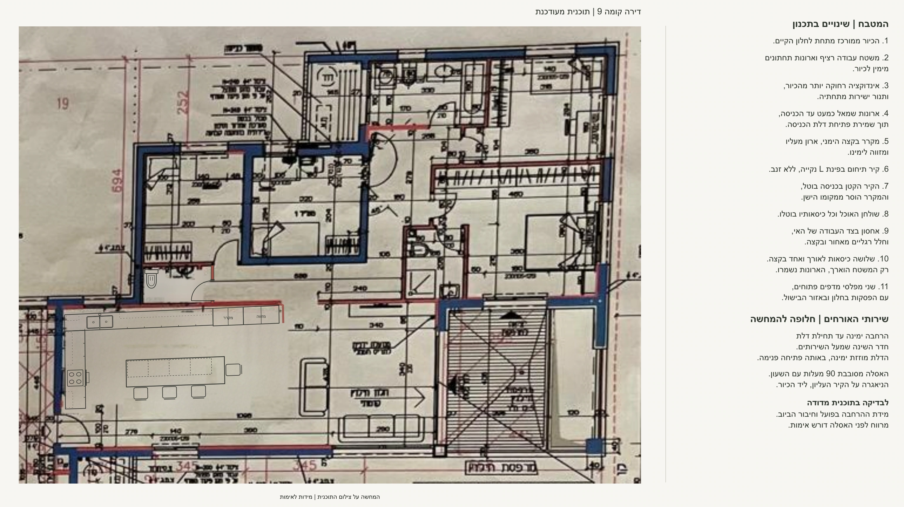
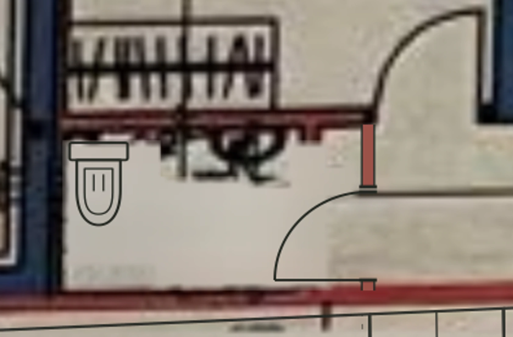
הרחבת החדר ימינה, הזזת הדלת וסיבוב האסלה. ההיתכנות והמידות נשארו לבדיקה.
פתיחה והגדלה ↗גרסה היסטורית. היא מוצגת לתיעוד התהליך, ואינה מחליפה את הצעת r10 הנוכחית ואת החלטות המטבח והחדרים שנשמרו.
גרסה היסטורית. היא מוצגת לתיעוד התהליך, ואינה מחליפה את הצעת r10 הנוכחית ואת החלטות המטבח והחדרים שנשמרו.
גרסה היסטורית. היא מוצגת לתיעוד התהליך, ואינה מחליפה את הצעת r10 הנוכחית ואת החלטות המטבח והחדרים שנשמרו.
גרסה היסטורית. היא מוצגת לתיעוד התהליך, ואינה מחליפה את הצעת r10 הנוכחית ואת החלטות המטבח והחדרים שנשמרו.
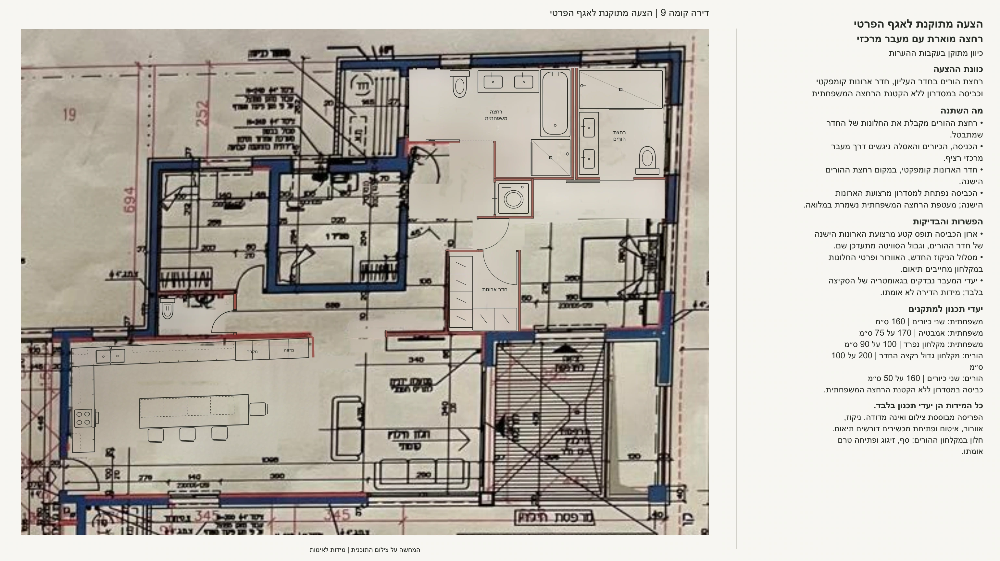
רחצת ההורים עוברת לחדר הימני העליון, חדר ארונות קומפקטי וכביסה במסדרון.
פתיחה והגדלה ↗גרסה היסטורית. היא מוצגת לתיעוד התהליך, ואינה מחליפה את הצעת r10 הנוכחית ואת החלטות המטבח והחדרים שנשמרו.
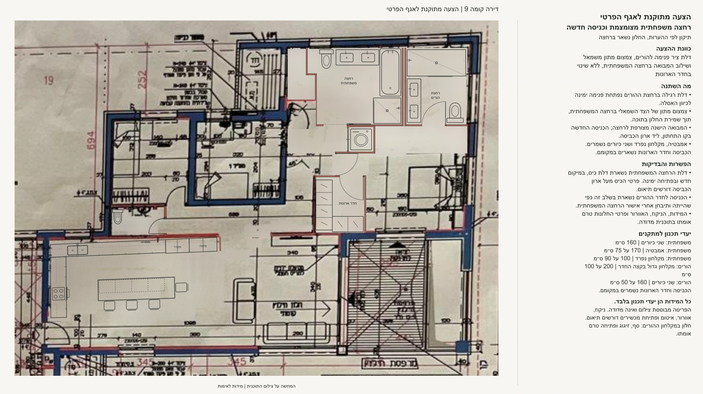
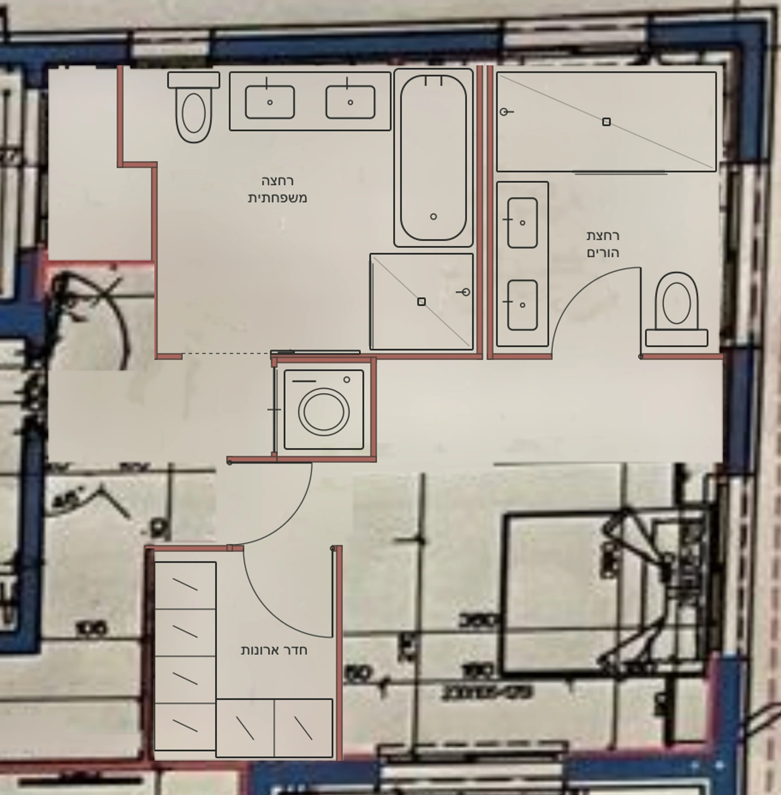
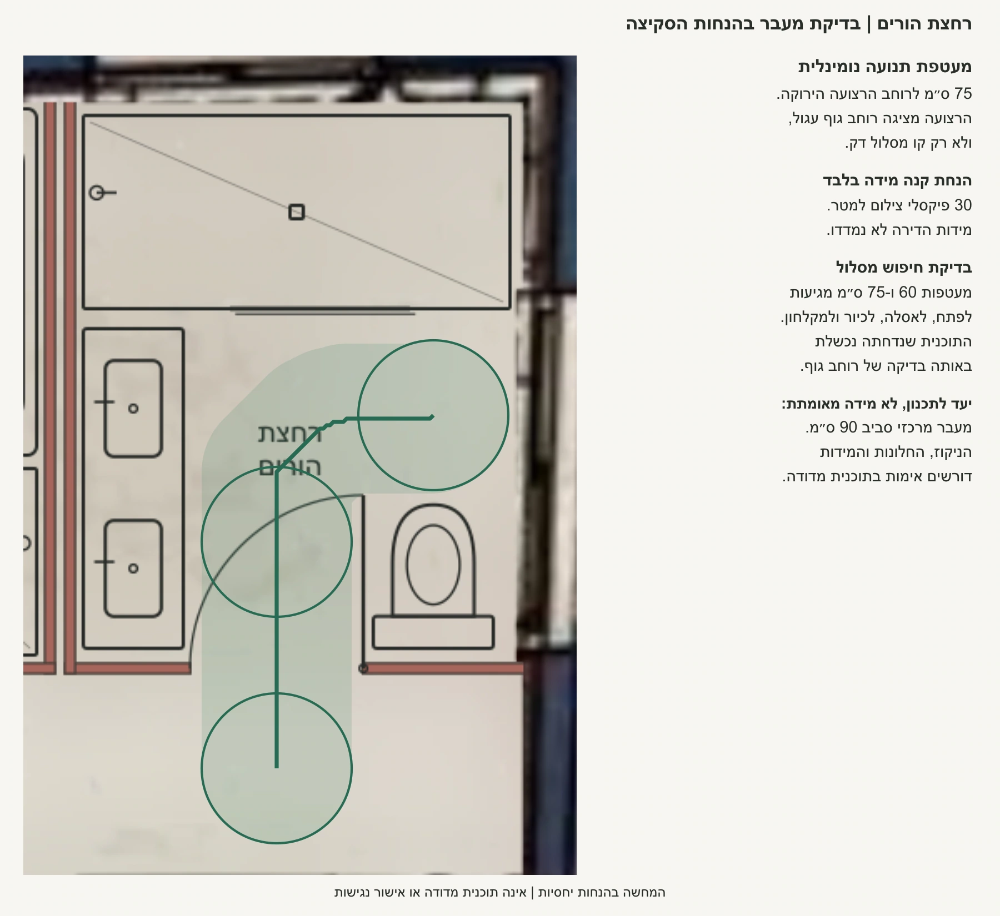
דלת רגילה לרחצת ההורים; צמצום מתון של הרחצה המשפחתית תוך שמירת החלון.
פתיחה והגדלה ↗גרסה היסטורית. היא מוצגת לתיעוד התהליך, ואינה מחליפה את הצעת r10 הנוכחית ואת החלטות המטבח והחדרים שנשמרו.
גרסה היסטורית. היא מוצגת לתיעוד התהליך, ואינה מחליפה את הצעת r10 הנוכחית ואת החלטות המטבח והחדרים שנשמרו.
סגירת הקיר והסרת הדלת שנוספה ללא בקשה. בשלב זה הגישה מהמסדרון טרם הוסדרה.
פתיחה והגדלה ↗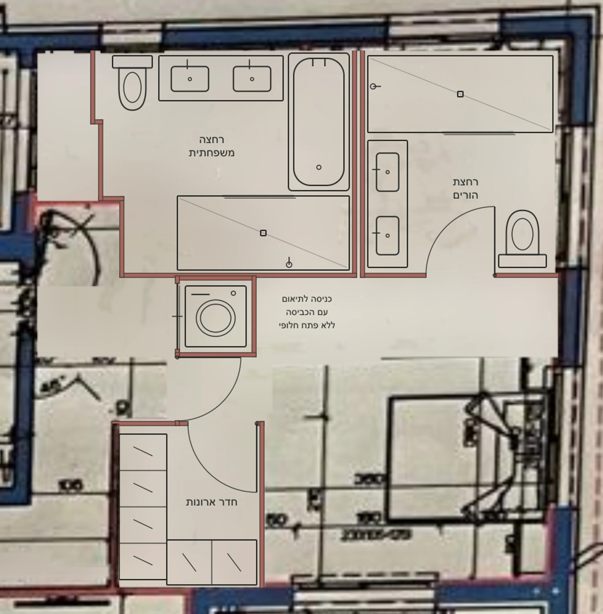
גרסה היסטורית. היא מוצגת לתיעוד התהליך, ואינה מחליפה את הצעת r10 הנוכחית ואת החלטות המטבח והחדרים שנשמרו.
הכביסה משמאל לאסלה, והכניסה מהמסדרון ליד המקלחון עם מבט לכיורים. כניסת ההורים הוצעה לבחינה.
פתיחה והגדלה ↗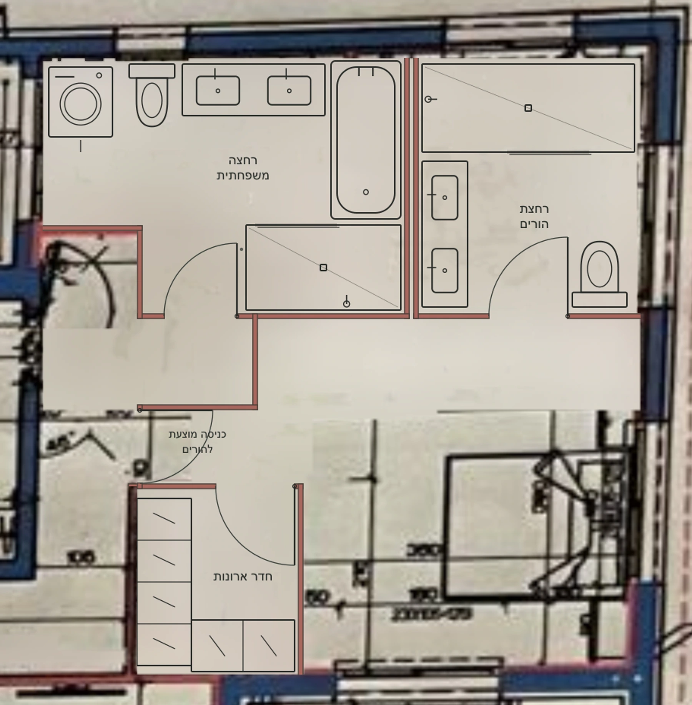
הכביסה משמאל לאסלה, והכניסה מהמסדרון ליד המקלחון עם מבט לכיורים. כניסת ההורים הוצעה לבחינה.
פתיחה והגדלה ↗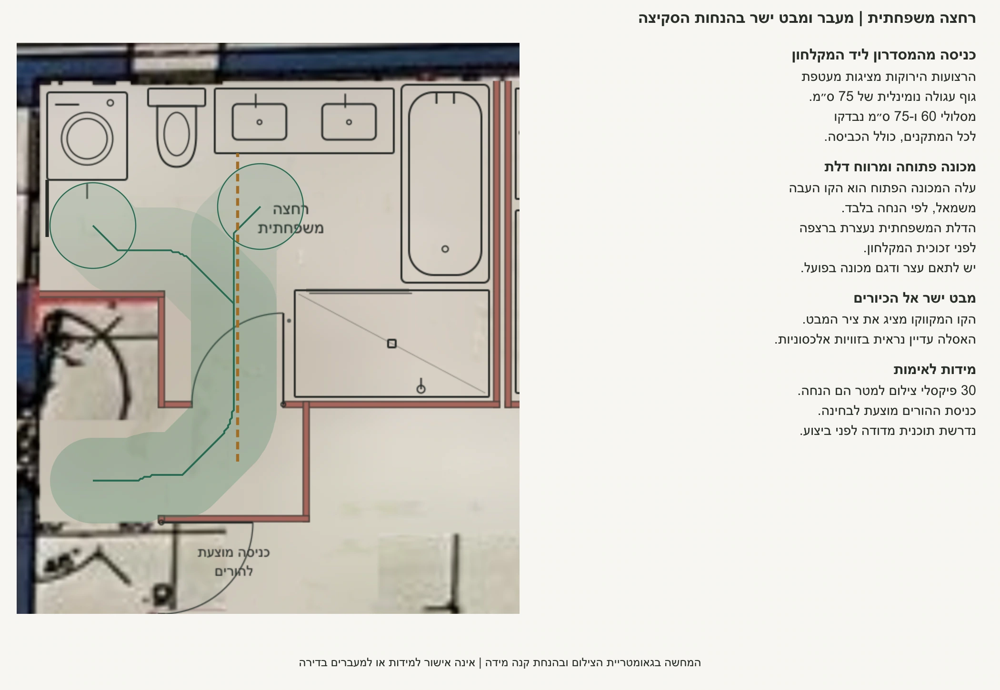
הכביסה משמאל לאסלה, והכניסה מהמסדרון ליד המקלחון עם מבט לכיורים. כניסת ההורים הוצעה לבחינה.
פתיחה והגדלה ↗גרסה היסטורית. היא מוצגת לתיעוד התהליך, ואינה מחליפה את הצעת r10 הנוכחית ואת החלטות המטבח והחדרים שנשמרו.
מלבן ארונות גדול יותר, פתח ישן סגור, כניסת ארונות מתוך חדר השינה וכניסת הורים ליד מקלחון הילדים. חלוקה זו נשמרת גם בעדכון r8.
פתיחה והגדלה ↗שמירת SVG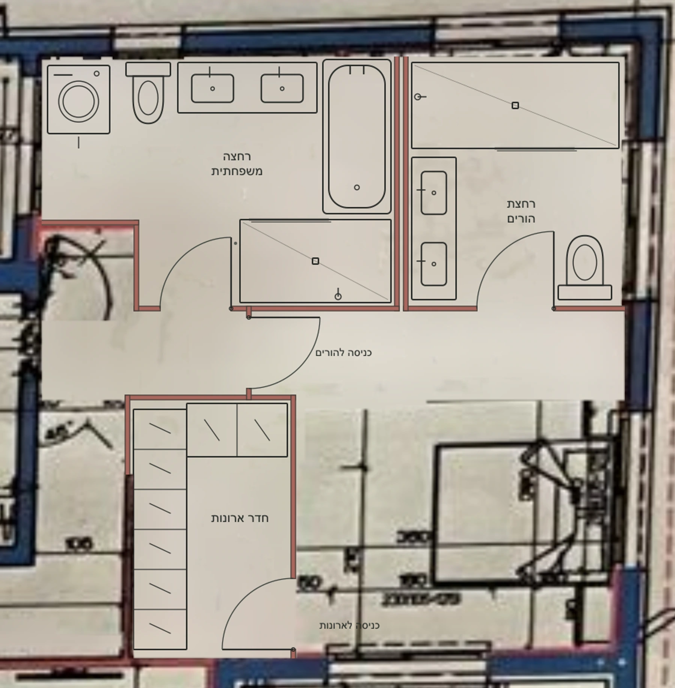
מלבן ארונות גדול יותר, פתח ישן סגור, כניסת ארונות מתוך חדר השינה וכניסת הורים ליד מקלחון הילדים. חלוקה זו נשמרת גם בעדכון r8.
פתיחה והגדלה ↗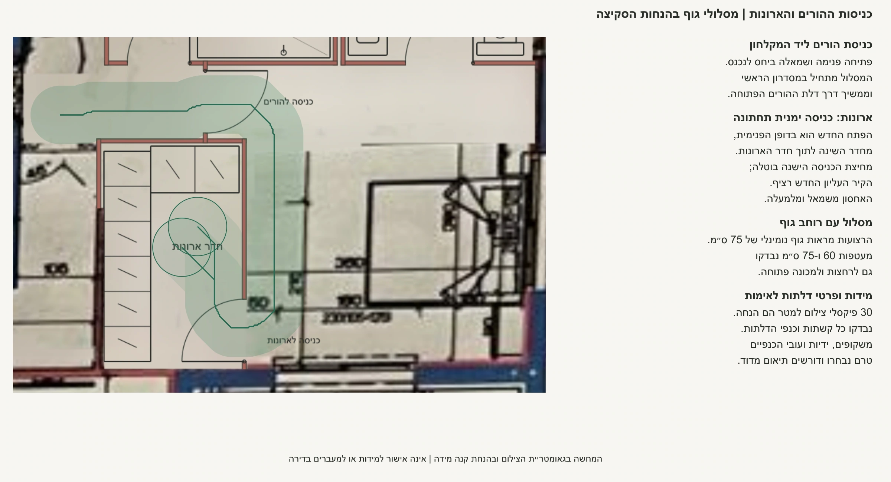
מלבן ארונות גדול יותר, פתח ישן סגור, כניסת ארונות מתוך חדר השינה וכניסת הורים ליד מקלחון הילדים. חלוקה זו נשמרת גם בעדכון r8.
פתיחה והגדלה ↗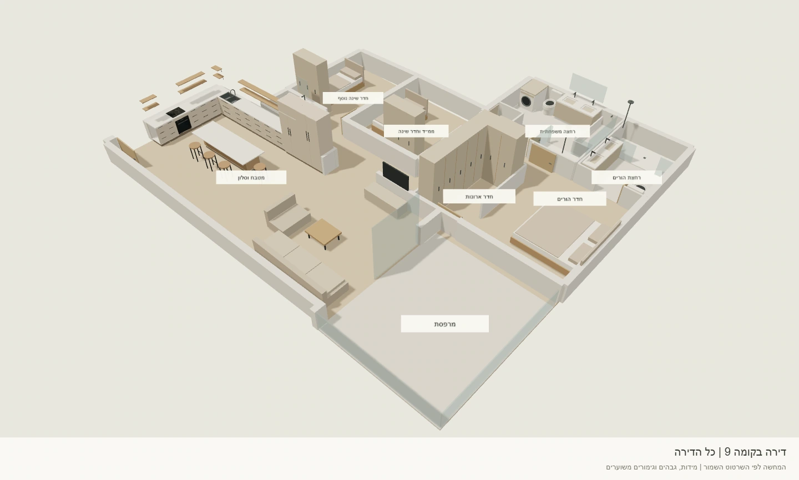
תיעוד r7 לפני הוספת לוח החשמל ושיפור הצגת החלונות והמרפסת ב-r8.
פתיחה והגדלה ↗גרסה היסטורית. היא מוצגת לתיעוד התהליך, ואינה מחליפה את הצעת r10 הנוכחית ואת החלטות המטבח והחדרים שנשמרו.
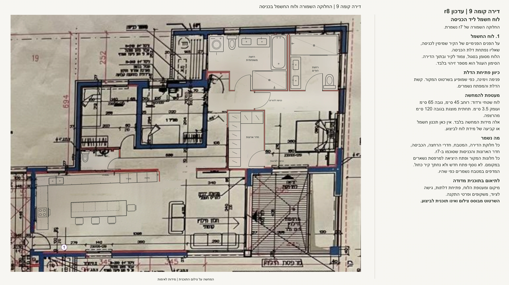
תוכנית הבסיס לפני החלפת המדפים, ביטול המזווה ושילוב קצוות הנוי ב-r9.
פתיחה והגדלה ↗שמירת SVGהפרט שנוסף ב-r8 ונשמר: הלוח על הקיר שמימין לנכנס, שאליו נפתחת דלת הכניסה. המעטפת וגובה ההתקנה להמחשה בלבד.
פתיחה והגדלה ↗שמירת SVG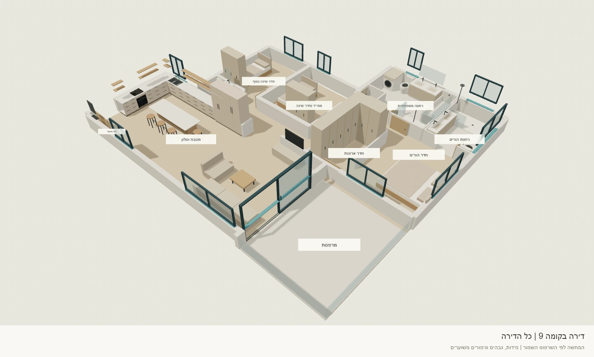
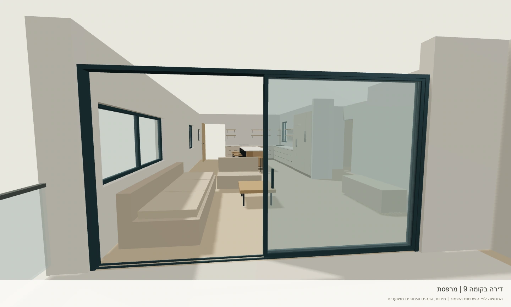
מסגרת, מסילות וזיגוג במיקום הפתח המקורי. ההמחשה אינה קובעת מוצר או מידת ביצוע.
פתיחה והגדלה ↗גרסה היסטורית. היא מוצגת לתיעוד התהליך, ואינה מחליפה את הצעת r10 הנוכחית ואת החלטות המטבח והחדרים שנשמרו.
תוכנית r9: ארונות עליונים בקיר הכיור, ביטול המזווה ושני קצוות נוי מעוגלים. חלוקת החדרים והפתחים שמורה.
פתיחה והגדלה ↗שמירת SVGארונות עליונים מקווקווים סביב החלון, מקרר ללא מזווה ומדפי נוי מעוגלים לידו ובקצה הכניסה.
פתיחה והגדלה ↗ארונות עליונים בקיר הכיור ושני קצוות מדפים פתוחים. זו המחשה בגבהים ובמידות משוערים, לא פרט נגרות לביצוע.
פתיחה והגדלה ↗תצוגת r9 עם המטבח המעודכן, חלונות המקור ודלת ההזזה למרפסת. החלוקה, חדר הארונות וכל הפתחים נשמרו.
פתיחה והגדלה ↗השוואה בין הנישה הקיימת לבקשת ביטולה. המשך קיר הרחצה מתנגש בדלת כפי שהיא מיוצגת. הביטול לא בוצע; ממתין לפתרון מאושר.
פתיחה והגדלה ↗זו נקודת ההמשך הנוכחית.
הצעת r10 לפי הסימון הירוק: המחיצה המדורגת הוסרה, הרחצה גדלה, הכניסה עברה לשמאל והפתח ליד המקלחון נסגר. מידות ופתיחת הממ״ד דורשות תיאום.
פתיחה והגדלה ↗שמירת SVGדלת פנימה בציר שמאלי במקום הנישה, עם נסיגה מקומית של כ-13 ס״מ משוערים. כל המתקנים והחלון נשמרים.
פתיחה והגדלה ↗גרסת r9 לפני הסימון הירוק. תמונה זו מוצגת להשוואה בלבד ואינה התוכנית הנוכחית.
פתיחה והגדלה ↗מצב רגיל לבדיקה: דלת הממ״ד סגורה ודלת הרחצה פתוחה. סיבוב הממ״ד המלא אינו מאושר כאן.
פתיחה והגדלה ↗מצב בדיקה שמציג במפורש את המפגש הלא פתור בין דלת הממ״ד לבין אזור הכניסה החדש. אין לראות בו מצב תקין לביצוע.
פתיחה והגדלה ↗דלת הרחצה נבדקה במודל כשהממ״ד סגור. פתיחת הממ״ד המלאה עדיין מתנגשת באזור החדש. ההשוואה אינה אישור לביצוע.
פתיחה והגדלה ↗הצילום שסימן אסף: להסיר את מחיצת ה-X, להעביר את דלת הרחצה ולסגור את הפתח הקודם. הכוונה מומחשת עם תיאום דלת הממ״ד כנושא פתוח.
פתיחה והגדלה ↗לא נמצאו שלבים מתאימים. אפשר לנסות מילה אחרת.
מסמכים לקריאה בדפדפן, בלי צורך בתוכנה נוספת. חלקם כוללים גם החלטות שהשתנו; בכל עמוד מצוין ההקשר.
הצעת r10: הסרת המחיצה, הרחבת הרחצה, העברת הדלת וסגירת הפתח הקודם. כולל הנסיגה המשוערת ותיאום פתיחת הממ״ד שנותר פתוח.
לקריאת המסמךמקרר, לוח החשמל, היתכנות ועלות הזזת האסלות, נישת הממ״ד ופרטי נגרות המטבח. רשימת בירור לפני תכנון לביצוע.
לקריאת המסמךעדכון r8 שנשמר כבסיס: מיקום הלוח בכניסה והצגת כל פתחי החוץ, תוך שמירת החלוקה והפתחים המקוריים.
לקריאת המסמךהמטבח, שירותי האורחים, קיר הטלוויזיה ואגף הרחצה. כולל ההחלטות המאוחרות והשלבים שהוחלפו.
לקריאת המסמךההורים וחדר הארונות נשמרים. הכניסה לרחצה המשפחתית עודכנה לאחר מסמך הבסיס בהצעת r10.
לקריאת המסמךתיעוד מטרת שתי הדירות, ההתמקדות בקומה 9, בקשות אסף והתקדמות התכנון.
לקריאת המסמךהחלופות הראשונות, הפשרות והסיבות שבגללן עברנו לכיוון המתוקן.
לקריאת המסמךניווט בין החדרים, מקור החלוקה, משמעות המידות ושמירת הגרסאות.
לקריאת המסמךמה חשוב לאסף במטבח, בפתיחת הדלתות, בחלונות ובניצול השטח.
לקריאת המסמךהשתלשלות התכנון, תיקונים, בחירות והחלטות קודמות.
לקריאת המסמךתצלום התוכנית של ארבע הדירות. התכנון הנוכחי מתייחס לדירה העליונה מימין, המסומנת לקומה 9. קומה 15 היא דירה נפרדת.